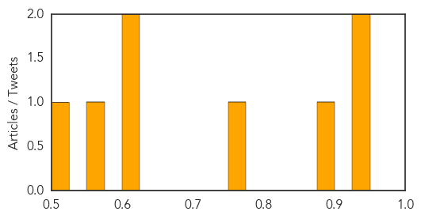

Hepatitis
30-Day Web Trend
30-Day Twitter Trend
0 alerts, 0 warnings

Article Locations

Article Confidences
Top Articles:
- 0.939
- Research traces hepatitis C infection roots to Second World War
- 0.937
- Hepatitis C origins traced back to WWII hospitals
- 0.882
- Scientists track hepatitis C roots in Scotland
- 0.754
- Hepatitis C cluster at SGH: Screening period to be extended
- 0.622
- No larger outbreaks of contagious disease among refugees
- 0.616
- More plaintiffs join hepatitis A exposure lawsuit filed against Hardee’s
- 0.554
- Hepatitis, A Slow Killer -Medical Expert
- 0.515
- 5-in-one vaccine rollout in November
Top Tweets:
-
No tweets found for Oct 28, 2015